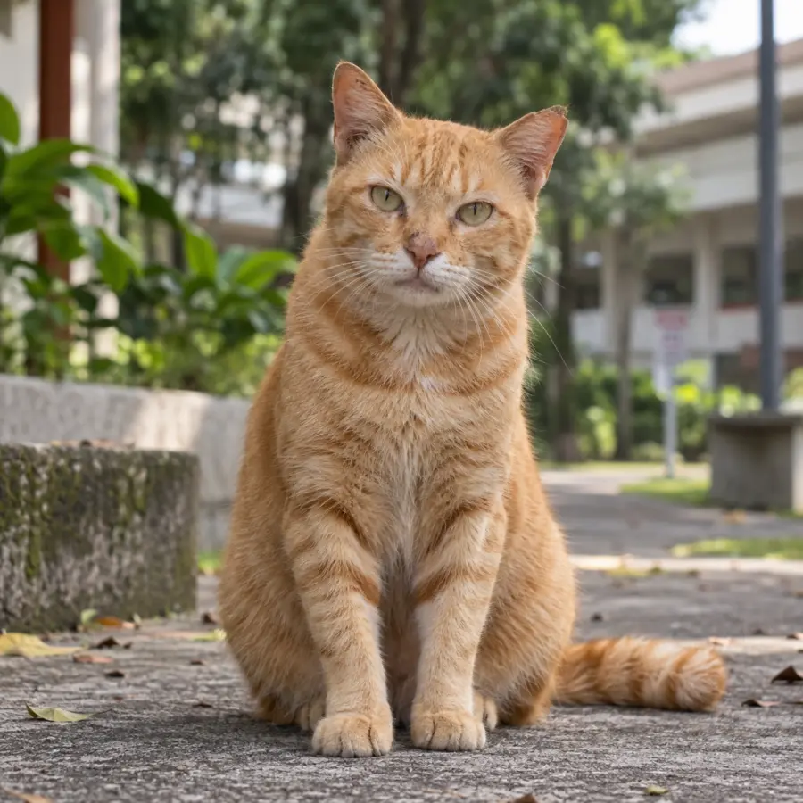
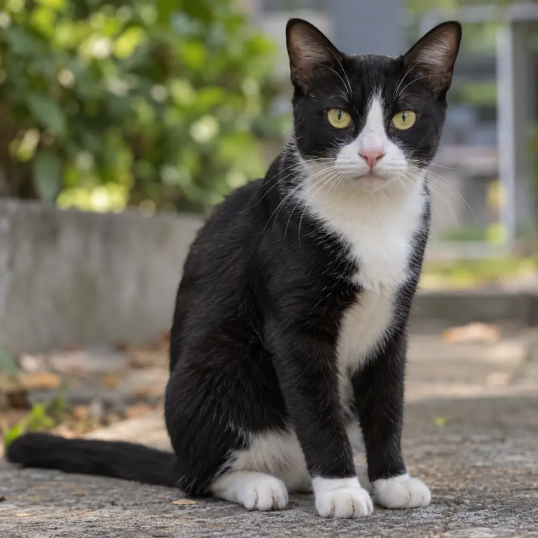
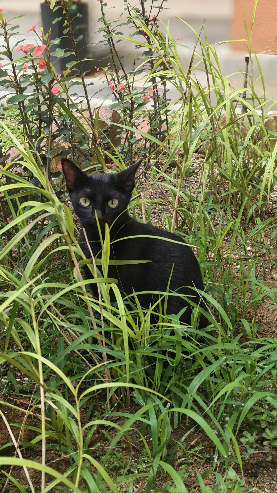
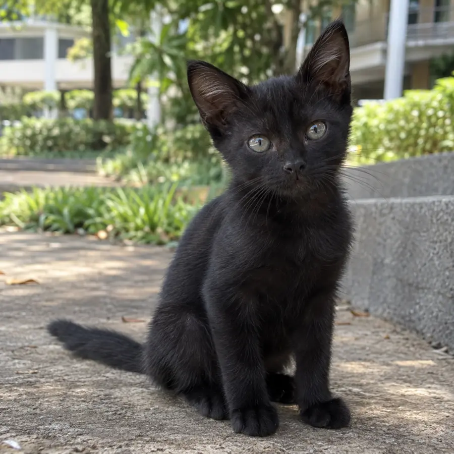
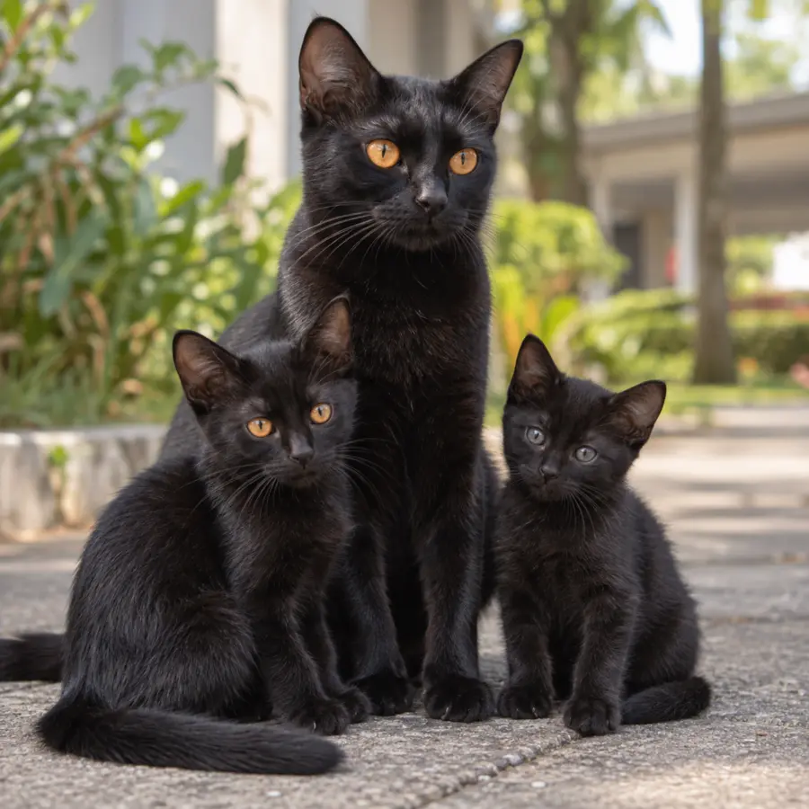

Direktori Resident Cats
Kenali kucing yang
menjadi sebahagian daripada KVKS.
Kenali kucing melalui foto dan ciri yang kelihatan. Abdul, Mama, Citam dan Adik telah dikenal pasti; label bagi kucing lain menerangkan rupa mereka sementara nama dan maklumat individu belum disahkan.
Maklumat sedang dikumpulkan
Abdul dikenang dalam memorialnya. Mama, Citam dan Adik telah dikenal pasti; nama, kawasan biasa dilihat dan status kebajikan kucing lain belum disahkan.
Kucing dalam gambar
Mudah dilihat, mudah dikenali.
Maklumat kucing akan dikemas kini apabila disahkan.

Profil belum disahkan
Kucing hitam putih
Berbulu hitam putih, dengan dada dan kaki putih.
- Nama panggilan
- Belum diketahui
- Kawasan umum
- Belum diketahui

Resident Cat
Mama
Boleh dibelai, tetapi Mama sangat jelas tentang satu perkara — jangan dukung dia. 😸
Lihat profil Mama →
Perlukan ruang
Citam
Comel dari jauh dulu. Citam masih hissy dan belum selesa disentuh.
Lihat profil Citam →
Boleh dibelai
Adik
Mesra dengan manusia — boleh dibelai dan didukung dengan lembut.
Lihat profil Adik →JAGA MAKLUMAT SENSITIF
Kongsi yang perlu sahaja.
Kumpulan WhatsApp digunakan untuk berkongsi maklumat dan menyelaras tindakan apabila kucing memerlukan bantuan. Kongsi maklumat yang relevan seperti foto, lokasi, masa dan keadaan kucing mengikut keperluan kes. Gunakan pertimbangan apabila berkongsi maklumat sensitif, dan elakkan menyebarkannya di luar kumpulan tanpa sebab yang munasabah.